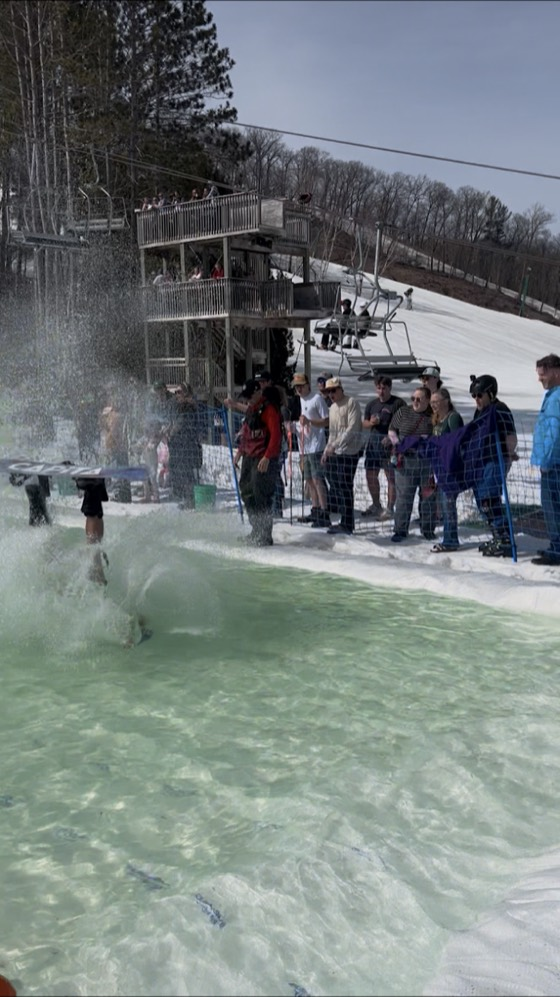
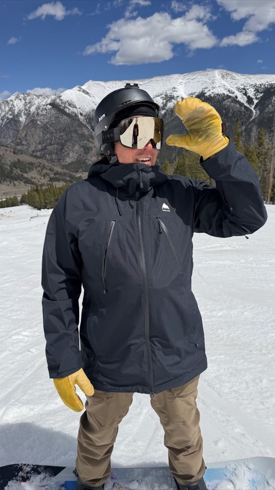

About
My name is David. I grew up snowboarding in the mid-90s, peak snowboarding culture. I got back into it five years ago. Now I’m to the point where I’m counting down the days starting in mid-August.
I gathered a lot of this data by scraping Facebook pages and worked on the idea with Claude Code. I hope it’s useful, or at least gets you hyped!!
I grew up in Minnesota, and know the most about our region, so I added a few details specific to the Midwest, and rope laps. If you want to help me get data on another area, let me know!
Know a resort’s opening dates, or want to take on a region? Email eazydp@gmail.com.
If the site saved you a search, or just got you hyped, there is a Venmo.
Buy me a beer
